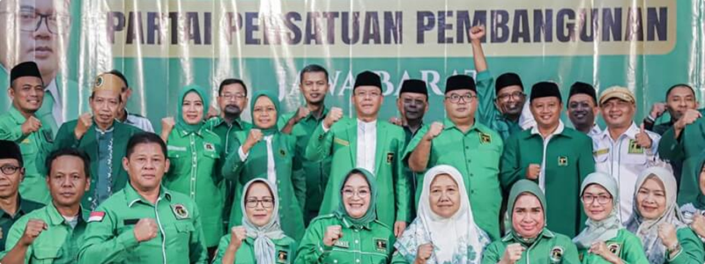

Berbagi pengetahuan
Berbagi ilmu dan keterampilan melalui kegiatan pendampingan belajar, literasi digital, serta edukasi masyarakat untuk memperluas kesempatan belajar dan mengembangkan potensi bersama.
Berakar pada Nilai, Bergerak untuk Rakyat.
BERGABUNG & BERKONTRIBUSI
Setiap perubahan dimulai dari langkah sederhana. Temukan berbagai kesempatan untuk berbagi pengetahuan, menjaga lingkungan, dan memperkuat kepedulian sosial melalui kolaborasi dan semangat kebersamaan.

BERSAMA MEMBANGUN PERUBAHAN
Berbagi ilmu dan keterampilan melalui kegiatan pendampingan belajar, literasi digital, serta edukasi masyarakat untuk memperluas kesempatan belajar dan mengembangkan potensi bersama.
Mendorong kepedulian terhadap lingkungan melalui kegiatan penghijauan, pengelolaan sampah, serta aksi kebersihan untuk menciptakan lingkungan yang lebih sehat dan berkelanjutan.
Memperkuat solidaritas melalui kegiatan sosial, bantuan kemanusiaan, dan kolaborasi masyarakat untuk membantu sesama serta membangun kehidupan yang lebih sejahtera.
PANDUAN PARTISIPASI
Setiap bentuk partisipasi membutuhkan komitmen, kerja sama, dan tanggung jawab. Dengan memahami kebutuhan kegiatan serta kemampuan diri, masyarakat dapat berkontribusi secara tepat dan memberikan manfaat bagi lingkungan maupun sesama.
Pilih bidang kegiatan yang sesuai dengan minat, keterampilan, dan waktu yang tersedia agar kontribusi dapat dilakukan secara optimal.
Pelajari tujuan, persyaratan, jadwal, lokasi, dan ketentuan kegiatan melalui informasi yang disediakan oleh penyelenggara.
Ikuti arahan penyelenggara, jaga keselamatan selama kegiatan, serta bangun kerja sama yang baik dengan relawan dan masyarakat.
LANGKAH BERIKUTNYA
Temukan informasi mengenai kegiatan, kesempatan berkontribusi, dan berbagai program yang mendorong kepedulian serta partisipasi masyarakat.
Jelajahi Program & Aksi